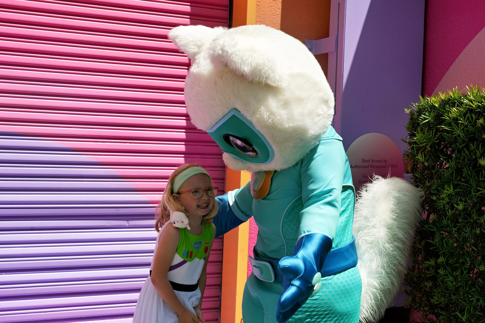
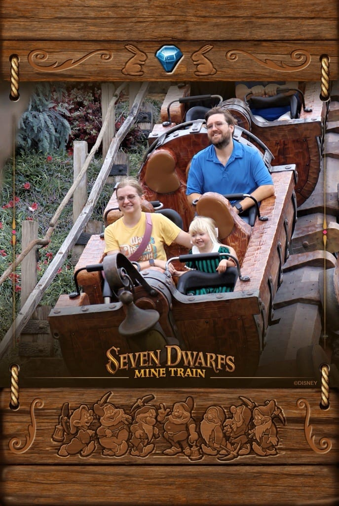
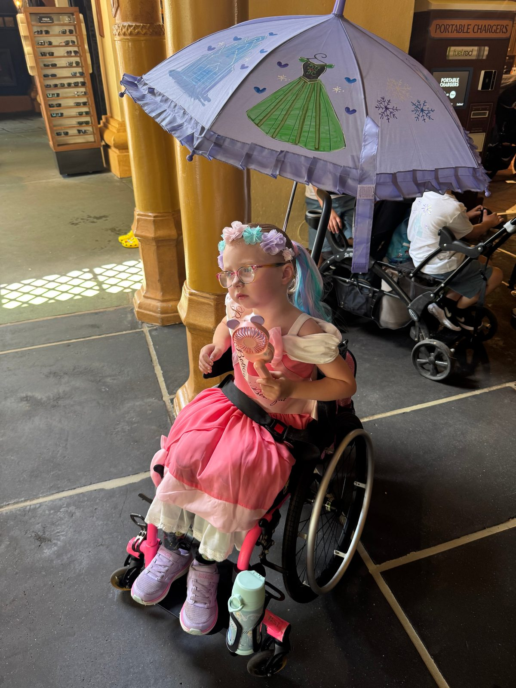
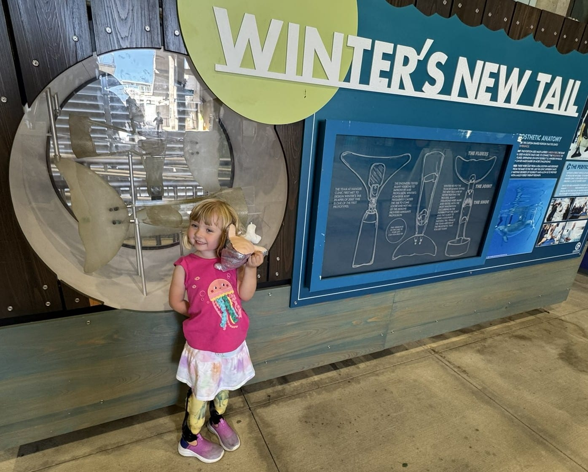
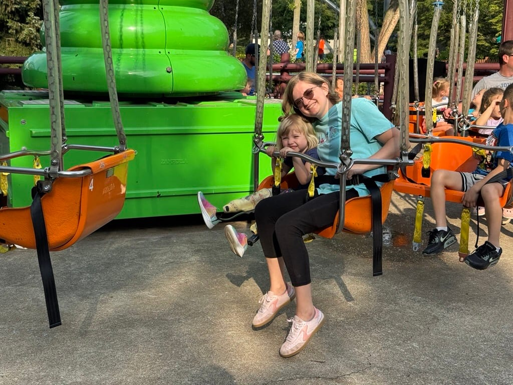

Flying with a Young Amputee
On Gwen’s first flight, we kept her prosthetics on during takeoff. She was unusually upset and eventually told us her legs were hurting. We took her prosthetics off mid-flight and she immediately calmed down. Since then, we’ve always requested accessible pre-boarding to give us time to take her prosthetics off and store them comfortably before takeoff.
While this may not affect all amputees, removing her prosthetics during flights has made traveling much more comfortable for Gwen. If your child shows signs of discomfort during air travel, this could be something to consider.
Bringing a Medical Bag on Flights
If your child needs medical supplies, mobility gear, or prosthetic care items when traveling, you’re allowed to bring an extra carry-on or checked bag free of charge on any U.S. airline. This is protected by the Air Carrier Access Act and the Department of Transportation’s 14 CFR § 382.121.
The bag must be used exclusively for medical or assistive items, such as prosthetic liners, compression garments, wound care supplies, or assistive technology.
You can use this medical bag as a carry-on or check it at the counter. Airlines cannot charge you a baggage fee for it, and it doesn't count toward your usual baggage limit. TSA may inspect it, but there’s no requirement for a doctor’s note or prescription, just pack the items together and let staff know it’s medical.
For more details, check the DOT’s guidance on traveling with a disability.
Accessibility Card
Some theme parks now require families to have an Accessibility Card in order to receive disability accommodations. This includes places like Universal Studios, Cedar Point, and Kings Island. The card itself doesn’t replace each park’s individual system, but it’s the first step in the process.
To get one, you fill out a form online and upload a doctor’s note confirming that your child has a medical need for support. You’ll be asked about the kinds of help your child might need, things like using a stroller in line, having extra time to board, or avoiding long waits in crowds. Once approved, you get a digital card with your child’s name and photo.
At the park, you bring the card to Guest Services. They’ll review it and then provide whatever pass or support their system uses. Each park is different. Some use return time passes, some offer alternate entrances, and others give specific tags for strollers or wheelchairs. The Accessibility Card helps standardize that first step so you don’t have to repeat medical information at every location.
While some families have mixed feelings about the extra step, the process was straightforward for us. The form only took a few minutes, and we had the card ready within a couple of days. If you’re planning a theme park visit, it’s worth checking whether that park requires the card ahead of time so you don’t run into delays at the gate.
Disney World
We have taken Gwen to Disney World four times so far, and it has consistently been one of the easiest theme parks for us to navigate with her prosthetics. There has not been a ride or activity she wanted to do that she could not participate in. She has been able to enjoy the parks right alongside everyone else, which is a big reason we keep going back.
DAS and Mobility Accommodations
Disney offers a program called Disability Access Service, or DAS, for guests who cannot wait in a traditional line. Gwen qualified for DAS on our first trip. Disney later changed the program, and her physical disability has not qualified on our more recent trips. The program and application process can change, so it is worth reviewing Disney's current information before traveling.
On our first three trips, we brought a stroller and received a wheelchair tag from Guest Services. The tag allowed us to treat the stroller as a mobility device and bring it through ride queues instead of leaving it in stroller parking. That accommodation worked very well for us and gave Gwen a place to rest throughout long park days.
Switching from a Stroller to a Wheelchair
The one problem we kept running into was the way Gwen sat in the stroller. Her feet were not supported, so the weight of her prosthetics pulled down on her legs while she was sitting. By around lunchtime each day, she would usually ask to take them off. She could still enjoy plenty of the park without them, but it made rides with a height requirement more difficult.
Other parents suggested trying a wheelchair so her feet would be supported. I was on the fence about it because a stroller has a good sunshade, and Gwen could lean back or sleep in it when she was tired. We did not have much time before our next trip, so I found a pediatric wheelchair in Gwen's size on eBay. I then contacted a medical supply company and bought a stroller-style push handle that fit the chair.
The difference on our fourth trip was night and day. We spent six days in the parks, often leaving around 8 in the morning and getting back after the fireworks around 11 at night. Gwen never once asked to take her prosthetics off. Having her feet supported by the wheelchair made a much bigger difference than we expected.
To replace the shade we were giving up by leaving the stroller at home, I found a small articulating double clamp made for camera equipment. One end clamped to the wheelchair and the other held an umbrella. It gave us an adjustable shade that worked very well in the Florida sun.
Staying at a Disney Resort
On our first three trips, we stayed at hotels just outside Disney World. After having such good experiences with Gwen being able to ride everything in the parks without being questioned about her prosthetics, we decided to stay at a Disney resort for the first time on our fourth trip. We chose Disney's Contemporary Resort.
Hotel pools have sometimes been difficult for us on other trips. If a pool had a small water slide, staff would occasionally tell us Gwen could not wear her prosthetics on it. I would take them off, only to then be told she was not tall enough to use the slide without them. We ran into this at multiple hotels, including hotels around Orlando and Hotel Breakers at Cedar Point. It put Gwen in a situation where there was no way for her to follow both rules and enjoy the same activity as the other kids.
We visited both pools at the Contemporary several times, and Gwen used the water slides with her prosthetics without being questioned or pulled aside. The same experience we had come to appreciate inside the Disney parks continued when we went back to our hotel.
Being treated like every other kid is especially important to us on vacation. Gwen should be able to get excited, join the line, and enjoy an activity without first being singled out because of her legs. That feeling of inclusion is one of the biggest reasons we want to keep returning to Disney.



National Parks Access Pass
If your child has a permanent disability, including a limb difference, you can apply for a free Interagency Access Pass. This pass gives lifetime entry to national parks and more than two thousand other federal recreation sites across the country. We got one for Gwen, and it was an easy way to open up more travel options for the future.
The pass covers entrance fees for the passholder and usually everyone in the same vehicle. It works at national parks, national forests, and places run by the Bureau of Land Management, the U.S. Army Corps of Engineers, and a few others. It does not cover things like parking at state parks or reservations for campgrounds, but it’s a great benefit for families who enjoy being outdoors.
To get the pass, you fill out a short form and provide documentation of the disability. That can be a doctor’s note, SSI letter, or something similar that shows a permanent medical condition. You can apply online or in person at most national park entrance stations. There’s a five dollar processing fee if you order it online.
It’s worth looking into even if you don’t have a park trip planned yet. The pass never expires, and it’s one less thing to worry about when you’re planning a future trip. We keep Gwen’s in our glovebox so it’s always ready to go.
Clearwater Marine Aquarium – INSPIRE Program
Clearwater Marine Aquarium in Florida is home to the late Winter the dolphin, whose story inspired the movie Dolphin Tale. Winter swam with a prosthetic tail after losing hers, and became a powerful symbol of hope and resilience for children with limb differences.
The aquarium’s INSPIRE Program is specially designed to create meaningful experiences for individuals with limb differences and other challenges. Through personalized tours and educational encounters, the program celebrates diversity and determination.
When we visited with Gwen, she had the incredible opportunity to see and touch one of Winter's prosthetic tails. It was a moving, unforgettable experience that helped her see how differences can be sources of strength and inspiration.

Gwen next to Winter's tail.
Cedar Point
Our first trip to Cedar Point included some moments that made Gwen feel singled out because of her prosthetics. Ride operators frequently stopped us to verify eligibility, and some didn’t know how to address her disability appropriately. We shared feedback with the park about the need for better staff training and more consistent ADA procedures.
However, when we returned this year, the experience had greatly improved. Gwen enjoyed the park without being questioned or delayed at any ride. Staff didn’t single her out, and she had an amazing time. We hope these changes continue and that other families experience the same kindness we did on our second visit.

Riding the swings at Cedar Point, a day full of smiles and sunshine.